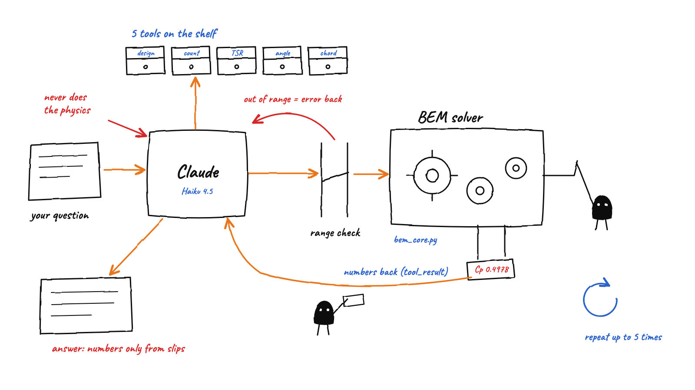
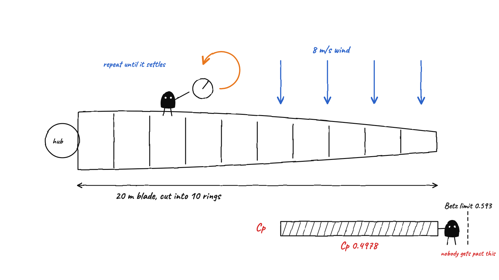
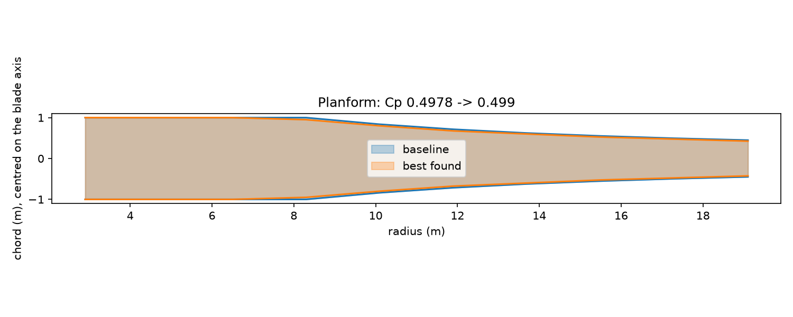
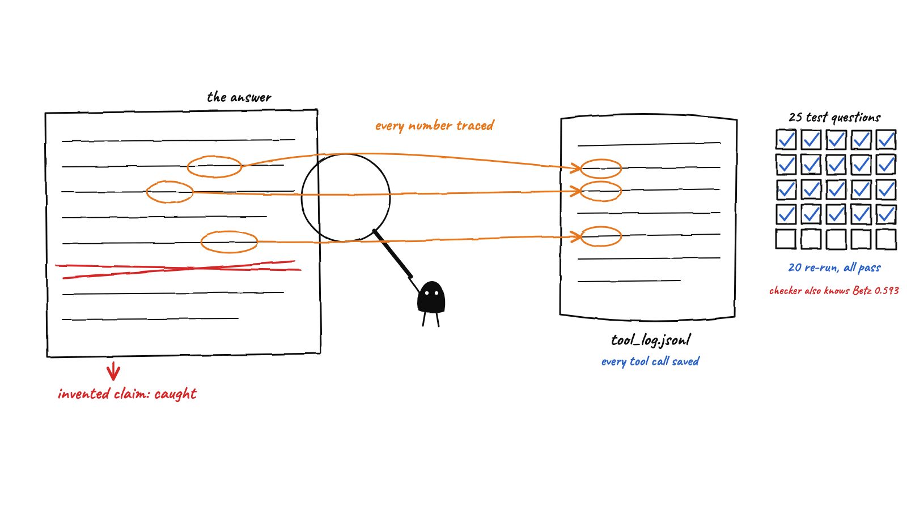

A guided read of the code at SHIP 2: the physics solver, the agent that calls it, the checker that keeps it honest, and Phases 8 to 11 (chord and twist search, real airfoils, whole-design search, 3D blade and STL).
Written for Ali. Every code block below is pulled straight from your files, so it matches what is on disk.
You type a plain-English question. A language model (Claude Haiku 4.5) does not answer from memory. It picks one of eleven tools, the solver runs the real physics, and the model reports the numbers that come back. That one rule, the model never does physics, shapes almost every file.

Picture 1. One question's trip. Orange = the path, red = rules, blue = system notes.
| File | Job | Part |
|---|---|---|
bem_core.py | The physics: blade design and the BEM solver | 1 |
BEM_solver_agent.py | Tool schemas, input checks, the loop that talks to Claude, the system prompt, logging | 2 |
chord_opt.py | Phase 8: find a better chord, plot the blade | 3 |
twist_opt.py, design_opt.py, blade_geometry.py, data/airfoils/ | Phases 9 to 11: twist search, real airfoils, whole-design search, 3D blade and STL | 3b |
evals.py | 109 free automatic checks | 4 |
check_answer.py, test_questions.py, run_tests.py, break_it.py | Test the agent and catch invented numbers and claims | 4 |
app.py + web/ | Local web chat page | 5 |
What BEM does. A real blade is too complicated to solve in one go, so BEM cuts it into thin rings along its length. Each ring is treated as a small 2D wing. For each ring we find how much the wind is slowed down and swirled by the rotor, then add up the force and torque from all rings. Adding them up gives power.
V_inf = 8.0 # m/s, wind speed R = 20.0 # m, rotor radius B = 3 # default number of blades rho = 1.225 # kg/m^3 # ==================== Rotor discretization ==================== N = 10 # number of rings r_hub = 2.0 # m edges = np.linspace(r_hub, R, N + 1) r = (edges[:-1] + edges[1:]) / 2 # ring midpoints dr = (R - r_hub) / N # ring width
V_inf is wind speed (8 m/s), R the rotor radius (20 m), rho air density. N = 10 rings between the hub (r_hub 2 m) and the tip. np.linspace(2, 20, 11) makes 11 evenly spaced edge positions. edges[:-1] means all edges except the last, edges[1:] all except the first, so adding them and dividing by 2 gives the midpoint of each ring. That is r: 2.9, 4.7, ... 19.1 m. dr is the width of one ring (1.8 m).tol = 1e-6 max_iter = 100
1e-6 is scientific notation), and never loop more than 100 times.def airfoil(alpha, polar="standin"):
a_deg = np.degrees(alpha) # alpha in radians
if polar == "standin":
C_L = 0.11 * (a_deg + 2)
C_L = np.where(a_deg > 12, 1.54 - 0.05 * (a_deg - 12), C_L) # after stall
C_D = 0.008 + 0.01 * C_L**2
C_D = np.where(a_deg > 12, C_D + 0.02 * (a_deg - 12), C_D) # after stall
return C_L, C_DC_L and drag coefficient C_D for a given alpha. np.degrees converts radians to degrees. Lift grows in a straight line with alpha until 12 degrees, then the blade stalls. np.where(condition, a, b) picks a where the condition is true and b elsewhere, and it works on whole arrays at once. Drag is a small base value plus a term that grows with lift squared, plus a stall penalty. **2 means squared. This is the polar='standin' branch; the real-airfoil branch below it is covered in Part 3b.def design_blade(omega_design, alpha_d_deg, a_target, c_max, B=3, polar="standin"):
alpha_d = np.radians(alpha_d_deg)
phi_d = np.arctan(V_inf * (1 - a_target) / (omega_design * r))
beta_d = phi_d - alpha_d
C_L_d, C_D_d = airfoil(alpha_d, polar)
C_n_d = C_L_d * np.cos(phi_d) + C_D_d * np.sin(phi_d)
sigma_d = 4 * np.sin(phi_d)**2 * a_target / ((1 - a_target) * C_n_d)
c_d = np.minimum(sigma_d * 2 * np.pi * r / B, c_max)
return c_d, beta_da_target = 1/3 (the ideal value from Betz theory) at every ring. Line by line:phi_d = np.arctan(V_inf*(1-a)/(omega*r)): the angle the relative wind makes with the rotor plane. np.arctan is the inverse tangent. r is an array, so this gives 10 angles at once.beta_d = phi_d - alpha_d: twist. The blade is turned so that the wind meets it at exactly the design angle of attack. Since phi gets smaller toward the tip, twist decreases from root to tip.C_n_d is the force coefficient pointing along the wind, built from lift and drag with np.cos and np.sin.sigma_d is solidity, how much of the ring circle the blades fill. The formula comes from balancing momentum theory with blade theory for the target a.c_d = np.minimum(sigma*2*pi*r/B, c_max): turn solidity into a chord length (ring circumference times solidity, split over B blades), then np.minimum caps each value at c_max. That is the chord cap.Here is the loop that makes BEM work. The wind slowdown a and the swirl a_prime both change the angle of attack, but the angle of attack decides the forces that decide a and a_prime. It is circular, so we guess, recompute, and repeat until the answer stops changing. That is called fixed-point iteration.

Picture 2. 小黑 keeps turning the dial on a ring until it settles. Total power can never beat the Betz limit.
def solve_ring(r_i, c_i, beta_i, omega, B=3, polar="standin"):
sigma = (B * c_i) / (2 * np.pi * r_i)
a = 0.3
a_prime = 0.01sigma is solidity again, now computed from the chord you actually have. a = 0.3 and a_prime = 0.01 are the first guesses. B=3 is a default value used if you do not pass a blade count. for i in range(max_iter):
V_axial = V_inf * (1 - a)
V_tan = omega * r_i * (1 + a_prime)
phi = np.arctan(V_axial / V_tan)
alpha = phi - beta_ifor i in range(max_iter) repeats up to 100 times. Each time: the axial wind speed (reduced by a), the tangential speed (increased by a_prime from swirl), the flow angle phi, and the angle of attack alpha = phi - beta. Same idea as design time, but now with the real a and a_prime. C_L, C_D = airfoil(alpha, polar)
C_n = C_L * np.cos(phi) + C_D * np.sin(phi)
C_t = C_L * np.sin(phi) - C_D * np.cos(phi)
a_new = 1 / (1 + (4 * np.sin(phi)**2) / (sigma * C_n))
a_prime_new = 1 / (4 * np.sin(phi) * np.cos(phi) / (sigma * C_t) - 1)C_n, C_t), then compute new values of a and a_prime from the momentum equations. if abs(a_new - a) < tol and abs(a_prime_new - a_prime) < tol:
converged = True
break
a, a_prime = a_new, a_prime_new
if not converged:
print(f"Warning: ring at r = {r_i:.2f} m did not converge in {max_iter} iterations.")
return a, a_prime, phi, alpha, i + 1, convergedabs() is absolute value. If both values moved less than tol, the ring has converged: set the flag and break out of the loop. Otherwise a, a_prime = a_new, a_prime_new replaces the guesses (Python lets you assign two things in one line) and the loop goes round again. If 100 rounds pass without settling, it prints a warning. It returns six things, including how many rounds it took (i + 1) and whether it converged.def solve_rotor(omega, c, beta, B, polar="standin"):
a_arr = np.zeros(N)
a_prime_arr = np.zeros(N)
phi_arr = np.zeros(N)
alpha_arr = np.zeros(N)
iter_arr = np.zeros(N, dtype=int)
conv_arr = np.zeros(N, dtype=bool)np.zeros(N)) to hold the results for each ring. for i in range(N):
(a_arr[i], a_prime_arr[i], phi_arr[i], alpha_arr[i],
iter_arr[i], conv_arr[i]) = solve_ring(r[i], c[i], beta[i], omega, B, polar)solve_ring for each, using that ring's radius, chord and twist. The parentheses on the left unpack the six returned values into the six arrays at position i. V_axial_arr = V_inf * (1 - a_arr)
V_tan_arr = omega * r * (1 + a_prime_arr)
V_rel_arr = np.sqrt(V_axial_arr**2 + V_tan_arr**2)
C_L, C_D = airfoil(alpha_arr, polar)
C_n_arr = C_L * np.cos(phi_arr) + C_D * np.sin(phi_arr)
C_t_arr = C_L * np.sin(phi_arr) - C_D * np.cos(phi_arr)
dF_n_arr = 0.5 * rho * V_rel_arr**2 * c * C_n_arr * dr
dF_t_arr = 0.5 * rho * V_rel_arr**2 * c * C_t_arr * dr
dT_arr = B * dF_n_arr
dQ_arr = B * r * dF_t_arrnp.sqrt of the two speeds squared), then the force on one blade element: 0.5*rho*V_rel**2*c*C*dr is the standard lift-style force formula (half density times speed squared times area times coefficient). Multiply by B blades for thrust. For torque multiply the tangential force by the arm r as well. T = np.sum(dT_arr)
Q = np.sum(dQ_arr)
P = Q * omega
P_wind = 0.5 * rho * np.pi * R**2 * V_inf**3
Cp = P / P_wind
C_T = T / (0.5 * rho * np.pi * R**2 * V_inf**2)
lmbda = omega * R / V_infnp.sum adds the rings up: total thrust T, torque Q. Power is torque times angular speed (P = Q*omega). Cp is the power coefficient: the power you extract divided by the power in the wind passing through the rotor disc (P_wind). lmbda is the tip-speed ratio: blade tip speed divided by wind speed. dT_mom_arr = 4 * np.pi * rho * V_inf**2 * a_arr * (1 - a_arr) * r * dr
T_mom = np.sum(dT_mom_arr)Finally it returns everything in a dictionary, a set of named values: res['Cp'], res['T'], res['dQ'] and so on. This is why later code can ask for exactly what it needs by name.
Four automatic tests on a result: Cp is below the Betz limit (16/27, about 0.5926, the most any rotor can extract from the wind); every a is between 0 and 0.5; all rings converged; and BEM thrust and momentum thrust agree within 1%. If any fails you know not to trust the number. Baseline blade result: Cp 0.4978, thrust 42,531 N, all rings converged.
The model can only use a function if you describe it. Everything in this file is about three jobs: describe the functions so the model picks the right one, guard the inputs, and run the loop that passes messages back and forth.
design_blade_tool = {
"name": "design_blade",
"description": "Designs a wind turbine blade (chord and twist along the span) for a given tip-speed ratio, design angle of attack, blade count and chord cap. Validated ranges only.",
"input_schema":
{
"type": "object",
"properties":
{
"lambda_design": {
"type": "number",
"description": "Design tip-speed ratio. Valid range: 4 to 10."
},
"alpha_design_deg": {
"type": "number",
"description": "Angle of attack the blade is designed around, in degrees, the angle between the chord line and the oncoming relative wind. Valid range: 2 to 12."
},
"num_blades": {
"type": "integer",
"description": "Number of blades. Valid range: 1 to 4."
},
"chord_cap_m": {
"type": "number",
"description": "Maximum allowed chord length at any point along the blade, in meters. The design never exceeds this, even if the theoretical optimum would be wider. Valid range: 1.0 to 3.0."
},
"airfoil": {
"type": "string",
"enum": POLARS,
"description": "Airfoil polar. 'standin' (default) is a made-up teaching polar, not real data. naca0012, naca4412, naca4415 and s809 are XFOIL data at Reynolds number 1,000,000. Leave it out unless the user names an airfoil or asks for real airfoil data."
},
},
"required": ["lambda_design", "alpha_design_deg", "num_blades", "chord_cap_m"]
},
}name and description are what the model reads to decide when to use it, so descriptions say what the tool does and when to use it. input_schema lists the inputs the model must supply, each with a type and a description that includes the valid range. Units live in the names (chord_cap_m, alpha_design_deg) so nobody guesses. required lists the inputs the model may not leave out.{'type': ..., 'description': ...}, and an extra } that pushes required outside input_schema. The code still runs, it just silently stops working.def make_sweep_tool(name, description, swept_key):
properties = {k: v for k, v in design_blade_tool["input_schema"]["properties"].items() if k != swept_key}
return {
"name": name,
"description": description,
"input_schema": {
"type": "object",
"properties": properties,
"required": [k for k in design_blade_tool["input_schema"]["required"] if k != swept_key],
},
}design_blade_tool and removes the swept key, because the sweep sets that value itself. {{k: v for k, v in ... if k != swept_key}} is a dictionary comprehension: loop through the items and keep every pair except the swept one. list(properties) turns the remaining names into the required list.sweep_aoa_tool = make_sweep_tool(
"sweep_aoa",
"Tries design angles of attack from 2 to 12 degrees at fixed tip-speed ratio, blade count and chord cap. Use this when the question compares angles of attack or asks which is best. Returns the Cp for each angle, whether each design converged, and the best one.",
"alpha_design_deg",
)RANGES = {
"lambda_design": (4, 10),
"alpha_design_deg": (2, 12),
"num_blades": (1, 4),
"chord_cap_m": (1, 3),
}def check_inputs(tool_input, keys=RANGES):
"""Raise ValueError for a missing or out-of-range input. Returns the airfoil name."""
for name, (low, high) in keys.items():
if name not in tool_input:
raise ValueError(f"{name} is required")
value = tool_input[name]
if not low <= value <= high:
raise ValueError(f"{name} must be between {low} and {high}, got {value}")
airfoil = tool_input.get("airfoil", "standin")
if airfoil not in POLARS:
raise ValueError(f"airfoil must be one of {POLARS}, got {airfoil}")
return airfoilfor name, (low, high) in keys.items() loops over every input and its limits. A missing input or if not low <= value <= high (a chained comparison) means raise ValueError(...): the function stops with a clear message, and the model reads that message. tool_input.get('airfoil', 'standin') reads the optional airfoil, falling back to the stand-in, and checks it is a known name.def run_bem(tool_input):
airfoil = check_inputs(tool_input)
num_blades = tool_input['num_blades']
omega_design = tool_input['lambda_design'] * V_inf / R
chord, twist = design_blade(
omega_design=omega_design,
alpha_d_deg=tool_input['alpha_design_deg'],
a_target=1/3,
c_max=tool_input['chord_cap_m'],
B=num_blades,
polar=airfoil,
)
res = solve_rotor(omega_design, chord, twist, num_blades, airfoil)
return {
"cp": float(res['Cp']),
"thrust_N": float(res['T']),
"chord_m": chord.round(3).tolist(),
"radius_m": r.round(2).tolist(),
"twist_deg": np.degrees(twist).round(2).tolist(),
"airfoil": airfoil,
"all_rings_converged": bool(res['converged'].all()),
}check_inputs. Then it converts tip-speed ratio to angular speed (omega = lambda*V_inf/R), calls design_blade then solve_rotor, and returns plain Python numbers and lists. .round(3).tolist() and float(...) matter: numpy types cannot be turned into JSON text.def run_sweep(tool_input, swept_key, values):
cp_list = []
converged_list = []
for v in values:
out = run_bem({**tool_input, swept_key: v})
cp_list.append(round(out["cp"], 4))
converged_list.append(out["all_rings_converged"])
valid = [(cp, v) for cp, v, ok in zip(cp_list, values, converged_list) if ok]
if not valid:
raise ValueError(f"no value of {swept_key} converged for these inputs")
best_cp, best_v = max(valid)
return {
swept_key: values,
"cp": cp_list,
"all_rings_converged": converged_list,
"best_" + swept_key: best_v,
"best_cp": round(best_cp, 4),
"cp_spread": round(max(cp_list) - min(cp_list), 4),
}values, calling run_bem once per value. {{**tool_input, swept_key: v}} copies the inputs and overrides one key (** unpacks a dictionary). zip walks three lists side by side. Only designs where all rings converged count toward best, and max(valid) picks the highest Cp (tuples compare by first item). cp_spread is highest Cp minus lowest: a number the tool computes, so the model never has to do arithmetic when asked which matters more.def sweep_blade_count(tool_input):
return run_sweep(tool_input, "num_blades", [1, 2, 3, 4])
def sweep_tsr(tool_input):
return run_sweep(tool_input, "lambda_design", [4, 5.5, 7, 8.5, 10])
def sweep_aoa(tool_input):
return run_sweep(tool_input, "alpha_design_deg", [2, 4, 6, 8, 10, 12])
def sweep_chord_cap(tool_input):
return run_sweep(tool_input, "chord_cap_m", [1.0, 1.5, 2.0, 2.5, 3.0])TOOLS = {
"design_blade": run_bem,
"sweep_blade_count": sweep_blade_count,
"sweep_tsr": sweep_tsr,
"sweep_aoa": sweep_aoa,
"sweep_chord_cap": sweep_chord_cap,
"optimize_chord": run_optimize_chord,
"optimize_twist": run_optimize_twist,
"optimize_blade": run_optimize_blade,
"compare_airfoils": compare_airfoils,
"optimize_design": run_optimize_design,
"export_blade_stl": export_blade_stl,
}TOOLS[block.name](block.input): look up the function by name, call it with the inputs. Adding a tool means adding a schema and one line here.def log_tool_call(name, tool_input, content, is_error):
entry = {
"time": datetime.now().isoformat(),
"tool": name,
"input": tool_input,
"is_error": is_error,
"output": content,
}
with open(LOG_FILE, "a") as f:
f.write(json.dumps(entry) + "\n")tool_log.jsonl, one JSON object per line. open(..., 'a') opens in append mode so old lines stay. json.dumps turns the dictionary into text (remember to call it, you once forgot the brackets). The checker reads this evidence later.A long instruction block sent with every request. It was written from the failures you saw, not from guesses. It says: numbers only from tool results or the question, no arithmetic by the model, 'best' means best of the values tested, no why-explanations, ask for missing inputs, do not call tools for out-of-range requests, and the only outside fact allowed is Betz. Phase 8 added one line telling the model to call the optimiser's result 'best found', not 'optimal'.
This is the part to understand best. A model reply is either final text or a request to use a tool. The loop keeps going until it gets text.
messages = list(history or []) + [{"role": "user", "content": question}]
tool_calls = []
seen = {}messages is the conversation so far: a list of dictionaries with a role (user or assistant) and content. tool_calls collects what was called for the checker. seen counts repeat calls. for step in range(5):
response = client.messages.create(
model="claude-haiku-4-5-20251001",
max_tokens=500,
system=SYSTEM_PROMPT,
tools=ALL_TOOLS,
messages=messages,
)
USAGE["in"] += response.usage.input_tokens
USAGE["out"] += response.usage.output_tokens
emit("usage", {"in": response.usage.input_tokens, "out": response.usage.output_tokens})
messages.append({"role": "assistant", "content": response.content})range(5) is the step cap: at most 5 trips, so it can never loop forever. client.messages.create sends the question, tool list and system prompt to Claude. Token counts are added to USAGE so you can see cost. Then the model's reply is appended to messages. if response.stop_reason != "tool_use":
breakstop_reason says why the model stopped. If it is anything other than tool_use the model has finished its answer, so break leaves the loop. tool_results = []
for block in response.content:
if block.type == "tool_use":
call_key = (block.name, json.dumps(block.input, sort_keys=True))
seen[call_key] = seen.get(call_key, 0) + 1tool_use are tool requests (a reply can also contain plain text blocks, and calling .text on a tool block crashes). The repeat guard: build a key from the tool name and inputs, and count how often it has been seen. sort_keys=True makes equal inputs produce equal text. if seen[call_key] > 2:
content = "You already made this exact call twice. Stop calling tools and answer with what you have."
is_error = True try:
result = TOOLS[block.name](block.input)
content = trim_result(json.dumps(result))
is_error = False
except ValueError as e:
content = str(e)
is_error = True
except Exception as e:
content = f"Tool failed with {type(e).__name__}: {e}"try runs the tool and turns the result to text with json.dumps, shortened by trim_result if over 4,000 characters. A ValueError (our range check) sends its own message back. Any other exception sends Tool failed with .... Either way the loop survives and the model can explain what went wrong. is_error tells Claude the content is a failure. tool_results.append({
"type": "tool_result",
"tool_use_id": block.id,
"content": content,
"is_error": is_error,
})
messages.append({"role": "user", "content": tool_results})tool_result block with tool_use_id = block.id, which is how Claude matches an answer to its request. All results go back as one user message, and the loop runs again so the model can read them.After the loop, ask_agent returns the final text, the list of tool calls, and the full messages. If the step cap hit while the model still wanted tools, the answer is None.
The question: design_blade gives a chord from theory. Can a search find a chord with a higher Cp? You could use a general optimiser, but there is a shortcut. Each ring is solved on its own, so the power of ring 4 depends only on the chord of ring 4. That means you can choose the best chord for every ring separately, and no optimiser library is needed.
C_MIN = 0.1 # m, thinnest chord we try C_STEP = 0.05 # m, spacing between tried chords
def optimize_chord(lambda_design, alpha_design_deg, num_blades, chord_cap_m, airfoil="standin", a_target=1/3):
"""Return baseline and best-found chord for one design. Twist stays at the baseline twist."""
omega = lambda_design * V_inf / R
# Baseline blade from design_blade
c_base, beta = design_blade(omega, alpha_design_deg, a_target, chord_cap_m, num_blades, airfoil)
base = solve_rotor(omega, c_base, beta, num_blades, airfoil)
# Start from the baseline: per-ring power = ring torque * omega
best_power = np.where(base["converged"], base["dQ"] * omega, -np.inf)
best_c = c_base.copy()omega from tip-speed ratio. c_base, beta is the baseline blade from design_blade, and base is its full result. best_power starts as each ring's baseline power (torque dQ times omega); np.where gives -inf (minus infinity, lower than any real number) to rings that did not converge, so any converged candidate beats them. best_c starts as a copy of the baseline chord so the search can only improve. for c in np.arange(C_MIN, chord_cap_m + 1e-9, C_STEP):
with redirect_stdout(io.StringIO()), np.errstate(all="ignore"): # hide warnings from bad chords
res = solve_rotor(omega, np.full(N, c), beta, num_blades, airfoil)
ring_power = res["dQ"] * omega
better = (ring_power > best_power) & res["converged"]
best_power[better] = ring_power[better]
best_c[better] = cnp.arange(start, stop, step) makes the list of chords to try. For each chord c: np.full(N, c) builds a blade where every ring has chord c, and solve_rotor solves it. The per-ring power is read from res['dQ']. better is a True/False array: ring power beats the best so far and converged (& means 'and' for arrays). best_power[better] = ... then updates only the rings where it is True. That is boolean indexing. redirect_stdout and np.errstate keep the screen quiet while testing silly chords. best = solve_rotor(omega, best_c, beta, num_blades, airfoil)
return {
"cp_baseline": round(float(base["Cp"]), 4),
"cp_best_found": round(float(best["Cp"]), 4),
"cp_change": round(float(best["Cp"] - base["Cp"]), 4),
"thrust_baseline_N": round(float(base["T"])),
"thrust_best_found_N": round(float(best["T"])),
"chord_baseline_m": c_base.round(3).tolist(),
"chord_best_found_m": best_c.round(3).tolist(),
"twist_deg": np.degrees(beta).round(2).tolist(),
"radius_m": r.round(2).tolist(),
"airfoil": airfoil,
"rings_at_chord_cap": int(np.sum(best_c >= chord_cap_m - 1e-9)),
"baseline_all_rings_converged": bool(base["converged"].all()),
"all_rings_converged": bool(best["converged"].all()),best_found, not optimal, because this is a search over a fixed grid, with twist held at the baseline. baseline_all_rings_converged warns when the baseline itself is not valid to compare with.| Design: lambda 7, alpha 6, 3 blades, cap 2.0 m | Baseline | Best found |
|---|---|---|
| Cp | 0.4978 | 0.499 |
| Thrust (N) | 42,531 | 41,588 |
| Chord at ring 4 to 10 (m) | 2.0, 1.675, 1.429, 1.245, 1.103, 0.99, 0.898 | 1.9, 1.6, 1.35, 1.2, 1.05, 0.95, 0.85 |
| Rings at the 2.0 m cap | 3 (the inner rings stay at the cap) | |

Picture 3. Planform: baseline (blue) vs best found (orange). They almost overlap.
rr = np.array(result["radius_m"])
fig, ax = plt.subplots(figsize=(10, 4))
for key, label, colour in [("chord_baseline_m", "baseline", "tab:blue"),
("chord_best_found_m", "best found", "tab:orange")]:
half = np.array(result[key]) / 2
ax.fill_between(rr, -half, half, alpha=0.3, color=colour, label=label)
ax.plot(rr, half, color=colour)
ax.plot(rr, -half, color=colour)half = chord / 2 so the blade is centred on its axis. fill_between shades between -half and +half, ax.plot draws the outlines. matplotlib.use('Agg') makes it save to a file instead of opening a window (a window would block later code).optimize_chord_tool = {
"name": "optimize_chord",
"description": "Searches for a better chord distribution for one design, ring by ring, keeping the baseline twist and the chord cap. Use this when the question asks to improve, optimise or reshape the chord or planform. Returns the baseline Cp and the best-found Cp, cp_change, thrust for both, the chord of each ring for both, and how many rings sit at the chord cap.",
"input_schema": design_blade_tool["input_schema"],
}
def design_args(tool_input):
"""The five design inputs as keyword arguments for the optimisers, after checking them."""
return {
"lambda_design": tool_input["lambda_design"],
"alpha_design_deg": tool_input["alpha_design_deg"],
"num_blades": tool_input["num_blades"],
"chord_cap_m": tool_input["chord_cap_m"],
"airfoil": check_inputs(tool_input),
}
def run_optimize_chord(tool_input):
return optimize_chord(**design_args(tool_input))design_blade_tool's inputs. design_args runs check_inputs and packs the inputs as keyword arguments, so each optimiser runner is one line: optimize_chord(**design_args(tool_input)). ** unpacks a dictionary into named arguments. Two more edits finish any new tool: an entry in TOOLS, and the schema in the ALL_TOOLS list the loop sends to Claude.Same idea as the chord search, now with twist: keep the baseline chord, try the same extra twist on every ring, keep the best per ring.
for offset_deg in np.arange(OFFSET_MIN, OFFSET_MAX + 1e-9, OFFSET_STEP):
beta_try = beta_base + np.radians(offset_deg)
with redirect_stdout(io.StringIO()), np.errstate(all="ignore"):
res = solve_rotor(omega, c, beta_try, num_blades, airfoil)
ring_power = res["dQ"] * omega
better = (ring_power > best_power) & res["converged"]
best_power[better] = ring_power[better]
best_beta[better] = beta_try[better]np.radians(offset_deg) converts the offset to radians because the solver works in radians. Adding a single number to the array beta_base shifts every ring at once (numpy broadcasting). The rest is the same boolean-indexing trick as Phase 8.| lambda 7, alpha 6, 3 blades, cap 2.0 m | Baseline Cp | Best found Cp |
|---|---|---|
| Stand-in polar, twist search | 0.4978 | 0.502 |
| NACA 4412, twist search | 0.5415 | 0.5434 |
The root ring gains most: its twist drops by about 8.5 degrees, which raises its angle of attack to about 12 degrees. The chord is capped there, so the search gets more lift from a steeper angle instead of a wider blade.
tab_a, tab_cl, tab_cd = load_polar(polar)
a_deg = np.clip(a_deg, -89.0, 89.0)
C_L = np.interp(a_deg, tab_a, tab_cl) # inside the table
C_D = np.interp(a_deg, tab_a, tab_cd)
with np.errstate(all="ignore"):
a_rad = np.radians(a_deg)
# above the table
cl_hi, cd_hi = _viterna(a_rad, np.radians(tab_a[-1]), tab_cl[-1], tab_cd[-1])
# below the table: mirror, extend, mirror back
cl_lo, cd_lo = _viterna(-a_rad, np.radians(-tab_a[0]), -tab_cl[0], tab_cd[0])
C_L = np.where(a_deg > tab_a[-1], cl_hi, np.where(a_deg < tab_a[0], -cl_lo, C_L))
C_D = np.where(a_deg > tab_a[-1], cd_hi, np.where(a_deg < tab_a[0], cd_lo, C_D))load_polar reads an XFOIL table once (cached in a dictionary). np.interp does straight-line interpolation between table rows. Past the ends of the table (deep stall) there is no data, so _viterna extends it with a standard empirical formula that matches the last table point. Below the table the same formula is used on the mirror image. The nested np.where picks table, upper extension or lower extension for each angle.polar was added as the last argument with default 'standin', so every earlier call behaves exactly as before. evals.py checks that the baseline is still Cp 0.4978.| Airfoil (lambda 7, alpha 6, 3 blades, cap 2.0 m) | Cp | Thrust (N) |
|---|---|---|
| NACA 0012 (symmetric) | 0.5108 | 41,669 |
| NACA 4412 | 0.5415 | 43,123 |
| NACA 4415 | 0.5385 | 43,137 |
| S809 (NREL wind turbine airfoil) | 0.5267 | 42,178 |
| Stand-in (not real) | 0.4978 | 42,531 |
for c in chords: # every (chord, twist offset) pair, all rings at once
for off in offsets:
res = _quiet_solve(omega, np.full(N, c), beta_base + off, num_blades, airfoil)
ring_power = res["dQ"] * omega
better = (ring_power > best_power) & res["converged"]
best_power[better] = ring_power[better]
best_c[better] = c
best_beta[better] = beta_base[better] + off def fits(thrust, area):
return ((max_thrust_N is None or thrust <= max_thrust_N) and
(max_blade_area_m2 is None or area <= max_blade_area_m2))
screened, candidates = 0, []
for foil in airfoils:fits returns True when a design is inside the limits. A limit of None means no limit, which is why each test starts with max_thrust_N is None or .... for cand in candidates[:top_k]: # refine the best few with the chord+twist search
refined = optimize_blade(cand["lambda_design"], cand["alpha_design_deg"], cand["num_blades"],
cand["chord_cap_m"], cand["airfoil"])
use_refined = refined["all_rings_converged"] and fits(refined["thrust_best_found_N"],
refined["blade_area_best_found_m2"])
cp = refined["cp_best_found"] if use_refined else round(cand["cp"], 4)
if best is None or cp > best["cp"]:sort(key=..., reverse=True)) and refines only the best 3 with optimize_blade. The refinement can change thrust and area, so it is only used if the refined blade still fits. for y, c, t in zip(rs, cs, ts):
xs = (outline[:, 0] - PITCH_AXIS) * c # chordwise, pitch axis at 0
zs = outline[:, 1] * c # thickness direction
x = xs * np.cos(t) - zs * np.sin(t) # turn by the twist angle
z = xs * np.sin(t) + zs * np.cos(t)
sections.append(np.column_stack([x, np.full(n, y), z]))x cos t - z sin t, x sin t + z cos t). np.column_stack joins the x, y and z columns into points. for s in range(len(rs) - 1): # skin: two triangles between neighbouring sections
a, b = s * n, (s + 1) * n
for i in range(n):
j = (i + 1) % n # wraps round, which also closes the trailing edge
faces += [(a + i, a + j, b + j), (a + i, b + j, b + i)]% n (remainder) wraps the last point back to the first, which also closes the trailing edge.def is_watertight(faces):
"""Every edge used exactly twice, once in each direction."""
edges = {}
for f in faces:
for a, b in ((f[0], f[1]), (f[1], f[2]), (f[2], f[0])):
edges[(a, b)] = edges.get((a, b), 0) + 1
return all(cnt == 1 and edges.get((b, a)) == 1 for (a, b), cnt in edges.items())| Tool | Phase | What the model gets back |
|---|---|---|
optimize_twist | 9 | baseline vs best-found Cp, thrust, twist per ring, twist change, rings at the search limit |
compare_airfoils | 10 | Cp and thrust per airfoil, best airfoil, spread, stand-in Cp for reference |
optimize_blade | 11 | baseline vs best-found Cp, thrust, blade area, chord and twist per ring |
optimize_design | 11 | best design inputs, Cp, thrust, area, limits used, runners-up, how many designs fit |
export_blade_stl | 11 | STL path, triangle count, watertight flag, volume, file size |
Every tool also accepts an optional airfoil. The system prompt gained rules for the new tools: call results 'best found', never optimal; say once that real-airfoil results are XFOIL data at Re 1,000,000; mention the missing tip-loss correction if asked whether Cp is realistic.
The model's numbers were mostly faithful, but its prose sometimes added claims nobody gave it ('increasing twist', 'optimized', '49.8% of theoretical maximum'). So there is a checker that reads an answer and compares it with what the tools actually returned.

Picture 4. Every number in the answer is traced to the tool log. Invented claims get caught.
| # | Check | How |
|---|---|---|
| 1 | Right tool called | Each test question lists tools_any. At least one must appear in the log. |
| 2 | Invented numbers | extract_numbers pulls every number out of the answer using a regular expression (a pattern for text). check_numbers allows only numbers from the question, tool inputs, tool outputs and a short allow-list (Betz 0.593, the tool ranges). |
| 3 | Own arithmetic | is_derived tests whether an unexplained number equals the difference or percentage between two tool numbers. That gives a WARN, since the model did maths it was told not to do. |
| 4 | Betz | check_betz fails if any Cp, in a tool result or stated in the answer, is above 16/27. |
| 5 | Prose rules and a judge | PROSE_RULES are regex patterns for banned phrases ('optimized', 'twist is linear', '% of the span'). judge_prose then asks a second model (Sonnet) to list unsupported claims, and it costs money, so it is optional. |
def check_betz(answer, question, tool_calls):
issues = []json.loads. return {"status": "FAIL" if fail else ("WARN" if warn else "PASS"), "fail": fail, "warn": warn}test_questions.py holds 25 questions, each with the tools it should call. run_tests.py runs them through ask_agent, prints PASS, WARN or FAIL, and tracks cost: it adds up token costs and stops at a budget (default $0.10; Haiku is $1 in and $5 out per million tokens). --no-judge skips the judge model. Results: before the system prompt 7 passed, 2 warned, 16 failed; after it, the 20 questions re-run all passed the number and rule checks.
109 checks that need no API calls and run in about 8 seconds: the verified numbers from earlier phases still match, every airfoil stays below Betz and converges, BEM and momentum thrust agree, every search is at least as good as its baseline, the design search respects its limits, every mesh is watertight, the STL has every triangle, and every bad input is refused. Run python3 evals.py after any change. The agent questions grew to 35, with ten for the new tools.
Four cheap experiments (about $0.03) that break the agent deliberately to see why each defence exists: a vague tool description (the model picks the wrong tool), a tool that throws (the error path), a huge result (trim_result), and no stop condition (the step cap and repeat guard). A defence you have not seen fail is one you do not really understand.
A small local website on top of the same agent. python3 app.py runs it at http://localhost:8000 with a $0.10 spending cap per server session. python3 app.py --mock makes no API calls: it picks a tool by keyword and still runs the real solver, so you can try it for free.
| Piece | What it does |
|---|---|
Handler class | Python's built-in web server. do_GET serves the pages in web/, do_POST handles /api/chat. |
on_event callback | The reason ask_agent takes an optional on_event. Each step (tool_start, tool_result, usage, answer) is streamed to the browser as it happens. |
run_real / run_mock | Live model vs. keyword picker. Same solver either way. |
load_dotenv | Reads your API key from .env so it never sits in the code. .env is in .gitignore: never commit it. |
web/index.html, app.js, styles.css | The page, the logic that reads the streamed events, the look. Chats are saved in the browser only. |
/api/mesh, /api/stl | The page sends a blade shape (radius, chord, twist, airfoil) and gets a mesh for the 3D view or an STL file back. geometry_from_body checks the input first. |
/exports/<file>.stl | Serves STL files saved by the export_blade_stl tool, refusing any path outside exports/. |
| 3D viewer | three.js (vendored in web/vendor/, loaded only when you open a viewer). Drag to rotate, scroll to zoom. |
| Term | Meaning |
|---|---|
| Cp | Power coefficient: power extracted divided by power in the wind through the rotor. Max possible is 16/27 = 0.5926 (Betz). |
| a, a' | Axial induction (how much the wind slows down at the rotor) and tangential induction (swirl). Design target a = 1/3. |
| phi | Flow angle: angle between the relative wind and the rotor plane. |
| alpha, beta | Angle of attack (phi - beta) and twist (the angle the blade is turned). |
| sigma | Solidity: fraction of the ring the blades fill. |
| lambda (TSR) | Tip-speed ratio: tip speed divided by wind speed. |
| chord / chord cap | Blade width at a point / the largest width allowed. |
| tool_use / tool_result | The model asking to run a function / your reply with the function's output. |
| stop_reason | Why the model stopped. tool_use means it wants a tool, anything else means it is done. |
| JSON | Text format for dictionaries and lists, the language the model and your functions use to exchange data. |
| Bug | Tell |
|---|---|
Schema as bare ranges, or } pushing required out | No error, the tool just behaves oddly. |
block.id vs response.content[1] | Use block.id from the tool block you are handling. |
json.dumps without brackets | You get a function object, not text. |
.text on a tool block | Crash. Check block.type first. |
Pasting a line over a ??? and leaving ", | SyntaxError pointing near your edit. |
Running tempCodeRunnerFile.py | Run the whole file instead. |
np.argmax with nan | Picks the nan. Use np.nanargmax. |
plt.show() | Blocks the code after it. Save the figure instead. |
sweep_tsr designs a new blade at each speed, so TSR 5.5 and 7 look equal. That is not the same as Phase 7.1's window peak.| Phase | What | Status |
|---|---|---|
| 7 | Agent v1 (SHIP 1) | Done |
| 8 | Chord search, planform plot, optimize_chord | Done, live-tested |
| 9 | Twist search, optimize_twist | Done, live-tested |
| 10 | Real airfoils, compare_airfoils | Done, evals pass, live test pending |
| 11 | Whole-design search, 3D viewer, STL, auto evals (SHIP 2) | Done, evals pass, live test pending |
| 12 | CAD geometry | Next |
design_blade_tool), check_inputs, one line in TOOLS, one entry in ALL_TOOLS, a rule in the system prompt, an eval in evals.py and a question in test_questions.py.